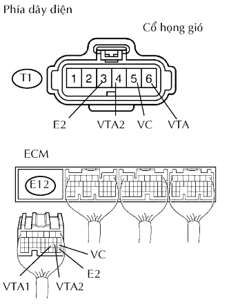
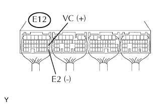

DTC P0120/41 Mạch Cảm Biến Vị Trí bướm ga/ Bàn Đạp Ga / Công Tắc "A" |
DTC P0122/41 Mạch Cảm Biến Vị Trí Bàn Đạp / Bướm ga / Công Tắc "A" - Tín Hiệu Thấp |
DTC P0123/41 Mạch Cảm Biến Vị Trí Bàn Đạp / Bướm ga / Công Tắc "A" - Tín Hiệu Cao |
DTC P0220/41 Mạch Cảm Biến Vị Trí Bàn Đạp / Bướm ga / Công Tắc "B" |
DTC P0222/41 Mạch Cảm Biến Vị Trí Bàn Đạp / Bướm ga / Công Tắc "B" - Tín Hiệu Thấp |
DTC P0223/41 Mạch Cảm Biến Vị Trí Bàn Đạp / Bướm ga / Công Tắc "B" - TÍn Hiệu Cao |
DTC P2135/41 Mối Liên Hệ Điện Áp của Cảm Biến Vị Trí Bàn Đạp / Bướm ga / Công Tắc A / B |
| Số mã DTC | Điều kiện phát hiện DTC | Khu vực nghi ngờ |
| - | Các điều kiện của DTC P0120/41, P0122/41, P0123/41, P0220/41, P0222/41 hay P0223/41 liên tục trong 2 giây (hở hay ngắn mạch trong mạch cảm biến vị trí bướm ga) | - |
| P0120/41 | Điện áp ra của VTA1 nhanh chóng dao động lên và xuống quanh ngưỡng hư hỏng bên trên và bên dưới |
|
| P0122/41 | VTA1 là 0.2 trở xuống |
|
| P0123/41 | VTA1 là 4.8 trở lên |
|
| P0220/41 | Các điện áp ra của VTA1 và VTA2 nhanh chóng dao động lên và xuống quanh ngưỡng hư hỏng bên trên và bên dưới tương ứng của chúng |
|
| P0222/41 | VTA2 là 0.5 trở xuống |
|
| P0223/41 | VTA2 là 4.8 hay cao hơn, VTA1 giữa 0.2 V và 1.8 V |
|
| P2135/41 | Điều kiện (a) liên tục trong 0.5 giây hay hơn, hoặc Điều kiện (b) liên tục trong 0.4 giây hay lâu hơn:
|
|
| Hiển thị của máy chẩn đoán | Nhả hết bàn đạp ga | Đạp hết bàn đạp ga |
| Throttle Position | 10 đến 22% | 66 đến 98% |
| Throttle Position No. 2 | 2.1 đến 3.1 V | 4.6 đến 5.5 V |
| 1.ĐỌC DANH SÁCH DỮ LIỆU (THROTTLE POSITION, THROTTLE POSITION NO. 2) |
Nối máy chẩn đoán với giắc DLC3.
Bật khóa điện đến vị trí ON và bật máy chẩn đoán ON.
Vào các menu sau: Powertrain / Engine and ECT / Data List / Throttle Position and Throttle Position No. 2.
Đọc giá trị hiển thị trên máy chẩn đoán.
| TP (VTA1) Khi nhả AP | TP No. 2 (VTA2) Khi nhả AP | TP (VTA1) Khi đạp AP | TP No. 2 (VTA2) Khi đạp AP | Khu vực nghi ngờ | Đi đến |
| 0% | 0 đến 0.2 V | 0% | 0 đến 0.2 V | Hở mạch VC | A |
| 100% | 4.5 đến 5.5 V | 100% | 4.5 đến 5.5 V | Hở mạch E2 | A |
| 0 hay 100% | 2.1 đến 3.1 V (Dự phòng) | 0% hay 100% | 2.1 đến 3.1 V (Dự phòng) | Hở mạch VTA1 hay ngắn mạch nối mát | A |
| 10 đến 22% (Dự phòng) | 0 đến 0.2 V hay 4.5 đến 5.5 V | 10 đến 22% (Dự phòng) | 0 đến 0.2 V hay 4.5 đến 5.5 V | Hở mạch VTA2 hay ngắn mạch nối mát | A |
| 10 đến 22% | 2.1 đến 3.1 V | 66 đến 98% (Không dự phòng) | 4.5 đến 5.5 V (Không dự phòng) | Mạch cảm biến vị trí bướm ga bình thường | B |
|
| ||||
| A | |
| 2.KIỂM TRA DÂY ĐIỆN (CẢM BIẾN VỊ TRÍ BƯỚM GA - ECM) |
|  |
Ngắt giắc nối T1 của cổ họng gió.
Ngắt giắc nối E12 của ECM.
Đo điện trở của các giắc nối phía dây điện.
| Nối dụng cụ đo | Điều kiện tiêu chuẩn |
| T1-5 (VC) - E12-18 (VC) | Dưới 1 Ω |
| T1-6 (VTA) - E12-20 (VTA1) | Dưới 1 Ω |
| T1-4 (VTA2) - E12-19 (VTA2) | Dưới 1 Ω |
| T1-3 (E2) - E12-28 (E2) | Dưới 1 Ω |
| T1-5 (VC) hay E12-18 (VC) - Mát thân xe | 10 kΩ trở lên |
| T1-6 (VTA) hay E12-20 (VTA1) - Mát thân xe | 10 kΩ trở lên |
| T1-4 (VTA2) hay E12-19 (VTA2) - Mát thân xe | 10 kΩ trở lên |
|
| ||||
| OK | |
| 3.KIỂM TRA ECM (ĐIỆN ÁP VC) |
|  |
Ngắt giắc nối T1 của cổ họng gió.
Bật khoá điện ON.
Đo điện áp của giắc nối ECM.
| Nối dụng cụ đo | Điều kiện tiêu chuẩn |
| E12-18 (VC) - E12-28 (E2) | 4.5 đến 5.5 V |
|
| ||||
| OK | |
| 4.THAY THẾ CỤM CỔ HỌNG GIÓ |
| NEXT | |
| 5.KIỂM TRA XEM MÃ DTC CÓ TÁI XUẤT HIỆN KHÔNG (CÁC MÃ DTC CỦA CẢM BIẾN VỊ TRÍ BƯỚM GA) |
Xoá các mã DTC (Xem trang Kích chuột vào đây).
Khởi động động cơ.
Động cơ chạy không tải trong 15 giây hay lâu hơn.
Nối máy chẩn đoán với giắc DLC3.
Bật máy chẩn đoán ON.
Vào các menu sau: Powertrain / Engine and ECT / DTC.
Đọc các mã DTC.
| Hiển thị (phát ra DTC) | Đi đến |
| Một hoặc nhiều hơn trong các mã P0120/41, P0122/41, P0123/41, P0220/41, P0222/41, P0223/41hay P2135/41 | A |
| Không phát ra | B |
|
| ||||
| A | ||
| ||
| 1.KIỂM TRA DÂY ĐIỆN (CẢM BIẾN VỊ TRÍ BƯỚM GA - ECM) |
Ngắt giắc nối T1 của cổ họng gió.
Ngắt giắc nối E12 của ECM.
Đo điện trở của các giắc nối phía dây điện.
| Nối dụng cụ đo | Điều kiện tiêu chuẩn |
| T1-5 (VC) - E12-18 (VC) | Dưới 1 Ω |
| T1-6 (VTA) - E12-20 (VTA1) | Dưới 1 Ω |
| T1-4 (VTA2) - E12-19 (VTA2) | Dưới 1 Ω |
| T1-3 (E2) - E12-28 (E2) | Dưới 1 Ω |
| T1-5 (VC) hay E12-18 (VC) - Mát thân xe | 10 kΩ trở lên |
| T1-6 (VTA) hay E12-20 (VTA1) - Mát thân xe | 10 kΩ trở lên |
| T1-4 (VTA2) hay E12-19 (VTA2) - Mát thân xe | 10 kΩ trở lên |
|
| ||||
| OK | |
| 2.KIỂM TRA ECM (ĐIỆN ÁP VC) |
Ngắt giắc nối T1 của cổ họng gió.
Bật khoá điện ON.
Đo điện áp của giắc nối ECM.
| Nối dụng cụ đo | Điều kiện tiêu chuẩn |
| E12-18 (VC) - E12-28 (E2) | 4.5 đến 5.5 V |
|
| ||||
| OK | |
| 3.THAY THẾ CỤM CỔ HỌNG GIÓ |
| NEXT | |
| 4.KIỂM TRA XEM MÃ DTC CÓ TÁI XUẤT HIỆN KHÔNG (CÁC MÃ DTC CỦA CẢM BIẾN VỊ TRÍ BƯỚM GA) |
Xoá các mã DTC (Xem trang Kích chuột vào đây).
Khởi động động cơ.
Động cơ chạy không tải trong 15 giây hay lâu hơn.
Đọc mã DTC. (Xem trang Kích chuột vào đây).
| Hiển thị (phát ra DTC) | Đi đến |
| Một hoặc nhiều hơn trong các mã P0120/41, P0122/41, P0123/41, P0220/41, P0222/41, P0223/41hay P2135/41 | A |
| Không phát ra | B |
|
| ||||
| A | ||
| ||